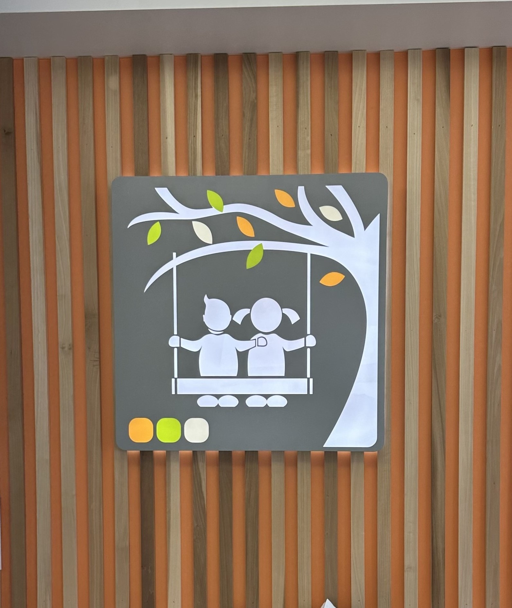
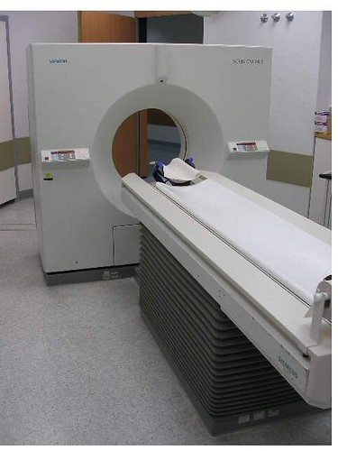

(05) Who reads your results
“Most of what brings people to a cardiologist
“Most of what brings people to a cardiologist has been measurable for a decade. So we built the day I wished they’d had.”

Dr Helena Marsh
Cardiologist · Medical Director




Sam Okoro, MSc
Dr Ines Valkonen
Dr Tomas Adeyemi
Dr Helena Marsh
Exercise physiology · 11 yrs
Endocrinology · 15 yrs
Radiology · 18 yrs
Cardiology · 22 yrs